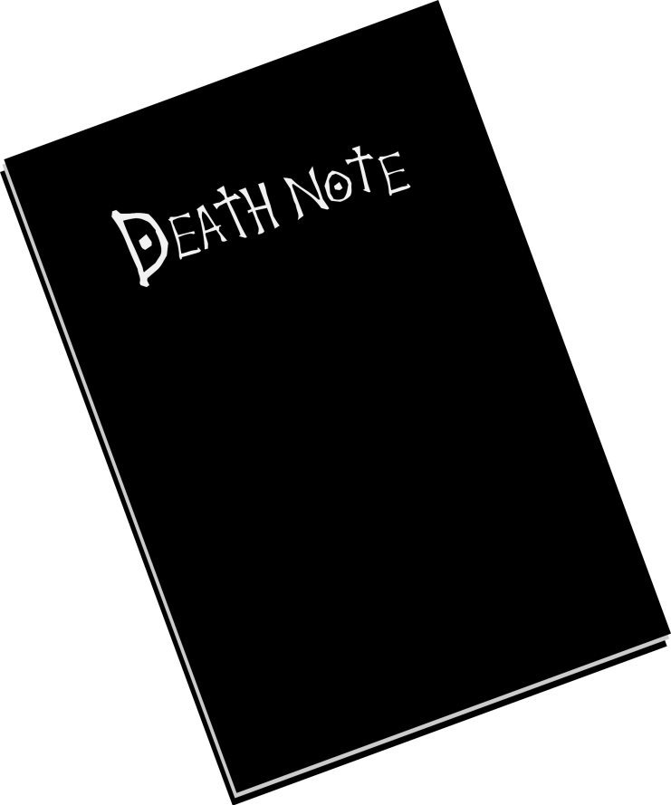

Тетрадь смерти
Тетрадь смерти — это оружие, способное убивать людей на расстоянии. При этом не имеет значения, где находится тот, кто её использует, но ему необходимо знать имя и лицо жертвы. Тетрадь смерти — вещь, принадлежащая первоначально богам смерти. Используя тетради, боги смерти выполняют своё главное предназначение — убийство людей. Происхождение артефактов неизвестно, но богам смерти тетради выдаются королём смерти. Каждому богу смерти может быть выдана королём только одна тетрадь, однако бог смерти может обладать столькими тетрадями, сколько сможет раздобыть.
Действие тетрадей смерти регламентируется специальными правилами:
- Человек, чьё имя будет записано в этой тетради — умрёт.
- Эффект тетради не подействует, если пишущий имя не будет знать, как выглядит лицо того, кто должен умереть. Таким образом, люди с одинаковыми именами и фамилиями не умирают.
- Если причина смерти не указана, человек умрёт через 40 секунд от сердечного приступа.
- Если причина смерти написана в течение 40 секунд после имени, то так оно и случится.
- После написания обстоятельств смерти, детали смерти должны быть записаны в следующие 6 минут 40 секунд.
Также есть правила о взаимодействии богов смерти с людьми:
- За человеком, владеющим тетрадью, будет следовать бог смерти, истинный владелец, до тех пор, пока человек не умрёт, или не откажется от Тетради.
- Человек, прикоснувшийся к тетради, сможет видеть и слышать бога смерти, даже если он не является владельцем тетради.
- Боги Смерти могут увеличивать продолжительность своей жизни, записывая имена людей в тетрадь, но люди не могут.
- Если бог смерти будет, контролируя человека тетрадью, специально продлевать жизнь другим людям, то этот бог смерти умрёт, однако, если человек будет делать то же самое, то он продолжит жить.
Глаза бога смерти — это способность богов смерти, смотря на человека, видеть его настоящее имя и продолжительность его жизни. Человек, владеющий тетрадью, в любой момент может поменяться глазами с Богом Смерти, при этом уменьшив оставшуюся продолжительность своей жизни вдвое. Если человек откажется от права владения тетрадью, то он потеряет глаза бога смерти, но остаток жизни к нему не вернётся.